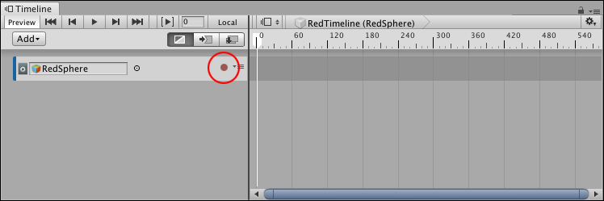
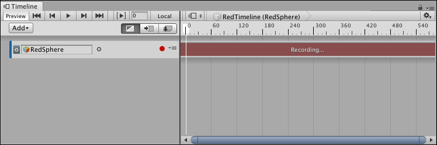
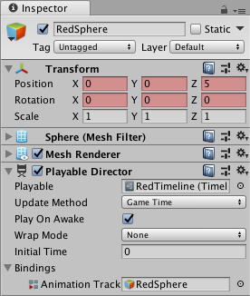
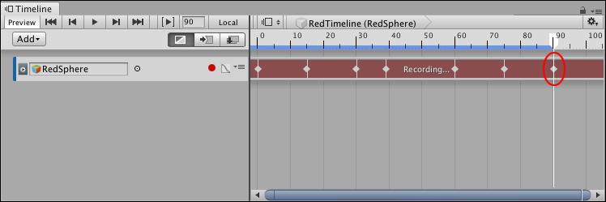
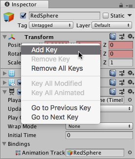
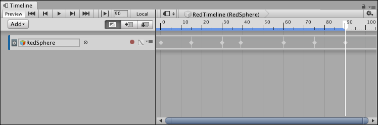
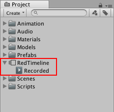

Recording basic animation with an Infinite clip¶
You can record animation directly to an Animation track. When you record directly to an empty Animation track, you create an Infinite clip.
An Infinite clip is a clip that contains basic key animation recorded through the Timeline window. An Infinite clip cannot be positioned, trimmed, or split because it does not have a defined size: it spans the entirety of an Animation track.
Before creating an Infinite clip, you must add an empty Animation track for the GameObject that you want to animate.
In the Track list, click the red circular Record button for the empty Animation track to enable Record mode.

Click the Record button on an empty track to enable Record mode
When a track is in Record mode, the clip area of the track is drawn in red with the “Recording…” message, and the Record button blinks on and off.

Timeline window in Record mode
When in Record mode, any modification to an animatable property of the GameObject sets a key at the location of the Timeline Playhead.
To start creating an animation, move the Timeline Playhead to the location of the first key, and do one of the following:
In the Inspector window, right-click the name of the property and choose Add Key. This adds an animation key for the property without changing its value. A diamond appears in the Infinite clip to show the position of the key.
In the Inspector window, change the value of the animatable property of the GameObject. This adds an animation key for the property with its changed value. A diamond appears in the Infinite clip.
In the Scene view, either move, rotate, or scale the GameObject. This automatically adds a key for the properties you change. A diamond appears in the Infinite clip.

Red background indicates that you’ve added an animation curve for the property to the clip

Setting a key adds a diamond to the Infinite clip
Move the playhead to a different position on the Timeline and change the animatable properties of the GameObject. At each position, the Timeline window adds a diamond to the Infinite clip for any changed properties and adds a key to its associated animation curves.
While in Record mode, you can right-click the name of an animatable property name to perform keying operations such as setting a key without changing its value, jumping to the next or previous keys, and removing keys. For example, to set a key for the position of a GameObject without changing its value, right-click Position and select Add Key from the context menu.

Right-click the name of an animatable property to perform keying operations
When you finish the animation, click the blinking Record button to disable Record mode.
An Infinite clip appears as a dope sheet in the Timeline window, but you cannot edit the keys in this view. Use the Curves view to edit keys. You can also double-click the Infinite clip and edit the keys with the Animation window.

An Infinite clip appears as a dope sheet
Save the Scene or Project to save the Timeline Asset and the Infinite clip. The Timeline window saves the key animation from the Infinite clip as a source asset. The source asset is named “Recorded” and saved as a child of the Timeline Asset in the Project.

Recorded clips are saved under the Timeline Asset in the Project
For every additional recorded Infinite clip, the Timeline window numbers each clip sequentially, starting at “(1)”. For example, a Timeline Asset with three recorded Infinite clips are named “Recorded”, “Recorded (1)”, and “Recorded (2)”. If you delete a Timeline Asset, its recorded clips are also removed.